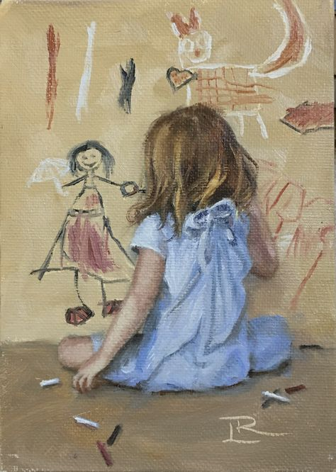

My Faviorte Class
One of my favorite subjects in school is science because it challenges me to think critically and understand how the world works. I love learning about biology, chemistry, and the human body, as these topics help me prepare for my future career in the medical field. Science pushes me to ask questions, solve problems, and explore new ideas, which makes it both exciting and rewarding.
Since I dream of becoming an ER doctor, studying science is incredibly important to me. I know that understanding medicine, anatomy, and chemistry will help me take care of patients and make a real difference in peoples lives. Every time I learn something new in science class, I feel like I’m one step closer to achieving my goal.
Whether it's conducting experiments, learning about different diseases, or exploring how the body functions, I enjoy every part of science. It keeps me curious, engaged, and motivated to work hard toward my future in medicine!
Most Intresting Class
- Math is one of the most interesting subjects for me because it challenges my brain and helps me grow as a thinker. I love how math is like solving a puzzle—each problem has a solution, and figuring it out gives me a sense of accomplishment. Whether its algebra, geometry, or problem-solving, I enjoy working through numbers and equations to find the right answer.
Math is also important because it teaches me logical thinking and problem-solving skills, which will be useful in my future career as an ER doctor. In the medical field, doctors use math for calculations, measurements, and understanding medical data. Knowing math well will help me make quick and accurate decisions when treating patients.
What I love most about math is how it always pushes me to improve. Each new lesson builds on the last, and every challenge helps my brain grow stronger. Even when a problem is difficult, I like the feeling of figuring it out and learning something new. Math isn't just numbers—it's a way to think smarter, work harder, and prepare for a successful future!
Coolest class
-
The coolest class I have ever taken is **Web** because it has introduced me to so many new skills in a subject that was completely brand new to me. In this class, I have learned how to **code**, use **JavaScript**, add **images**, and even build my own **website** from scratch!
What makes this class so exciting is that it combines creativity with problem-solving. I get to design web pages, experiment with layouts, and see my work come to life in a web browser. Learning how to write HTML, style with CSS, and add functionality with JavaScript has been both fun and challenging.
Web is also cool because its such a useful skill for the future. Whether I want to create a blog, an online portfolio, or even work on medical websites someday, knowing how to **code** will always be an advantage. Its amazing to think that with just a few lines of code, I can make something interactive and share it with the world.
This class has opened my eyes to a whole new world of technology, and I cant wait to keep improving my skills and learning even more about coding!
